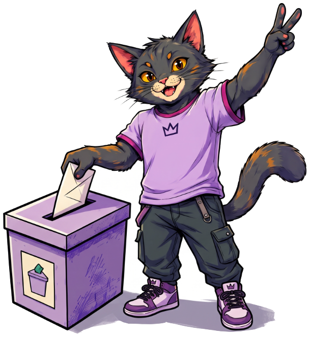

Tu voto sí se ve y sí cuenta. Descubre cuántas personas votaron en tu estado y en tu municipio en 2024.
{{ tooltip.fact }}
{{ f.tray }}
Información neutral del INE, en orden alfabético. Ejemplo ilustrativo: no son personas reales.